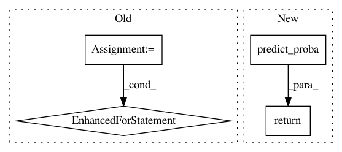

892065c8339f9c20d36127645ba3ae169577f47b,skorch/classifier.py,NeuralNetClassifier,predict,#NeuralNetClassifier#Any#,179
Before Change
y_preds = []
for yp in self.forward_iter(X, training=False):
yp = yp[0] if isinstance(yp, tuple) else yp
y_preds.append(to_numpy(yp.max(-1)[-1]))
y_pred = np.concatenate(y_preds, 0)
return y_pred
After Change
y_pred : numpy ndarray
return super().predict_proba(X).argmax(1)
neural_net_binary_clf_doc_start = NeuralNet for binary classification tasks
In pattern: SUPERPATTERN
Frequency: 3
Non-data size: 4
Instances
Project Name: dnouri/skorch
Commit Name: 892065c8339f9c20d36127645ba3ae169577f47b
Time: 2020-06-27
Author: b.bossan@gmail.com
File Name: skorch/classifier.py
Class Name: NeuralNetClassifier
Method Name: predict
Project Name: dnouri/skorch
Commit Name: 0b290fca12869ef756f4bef7d132fbe73479e2d5
Time: 2018-02-06
Author: benjamin.bossan@ottogroup.com
File Name: skorch/net.py
Class Name: NeuralNet
Method Name: predict
Project Name: automl/auto-sklearn
Commit Name: 30e93fa23adde9e9e36fede4552d2ff932497f6c
Time: 2017-10-25
Author: feurerm@informatik.uni-freiburg.de
File Name: autosklearn/pipeline/classification.py
Class Name: SimpleClassificationPipeline
Method Name: predict_proba